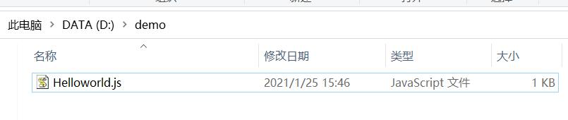
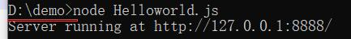
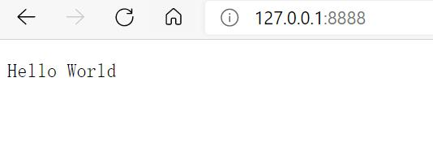

简单的说，node.js就是运行在服务端的JavaScript。
第一个node.js程序：HelloWorld!
脚本模式
console.log("HelloWorld")
保存文件，文件名为HelloWorld.js，并通过node命令在命令行执行：
node HelloWorld.js
交互模式
打开cmd或node.js ，键入node进入命令交互模式，可以输入语句并显示结果
node.js应用
代码
var http = require('http');
// 使用 require 指令来载入 http 模块，并将实例化的 HTTP 赋值给变量 http
http.createServer(function (request, response) {
// 发送 HTTP 头部
// HTTP 状态值: 200 : OK
// 内容类型: text/plain
response.writeHead(200, {'Content-Type': 'text/plain'});
// 发送响应数据 "Hello World"
response.end('Hello World\n');
}).listen(8888);
// 终端打印如下信息
console.log('Server running at http://127.0.0.1:8888/');截图


